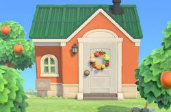

all about tangy
tangy (ヒャクパー, hyakupā?) is a peppy cat villager that appears in every game of the animal crossing series, except for pocket camp. the name "tangy" comes from the sharp taste of citrus fruit. her japanese name is a contraction of "100 percent" and refers to juice concentrate. she appears on the album cover for k.k. birthday. she has the music hobby.
tangy's house in animal crossing new horizons
tangy fax no printer
- Gender: Female
- Personality: Peppy
- Species: Cat
- Birthday: June 17th (Gemini)
- Initial phrase: reeeeOWR
- Initial clothes: Green Retro Dress
- Home request: A deliciously fruity room.
- Skill: Doing Handstands
- Goal: Hair Stylist
- Coffee: Blue Mountain, The regular amount of milk, Two spoonfuls of sugar
- Style: Flashy
- Favorite song: i love you
personality type
Peppy villagers appear to be in a good mood often and are easy to become friends with. As a peppy villager, Tangy will have the tendency to over-react in conversations about trivial subjects, and will usually be over-excited to see the player or other villagers. This villager, like other peppy villagers, will rarely be discouraged from doing anything, including the usual hobbies. Peppy villagers dream of becoming famous in the future and read Ms. Nintendique, an unseen magazine read by snooty, normal, and other peppy villagers in the Animal Crossing Series. Peppy villagers will also have a very short attention span, which means they soon forget some arguments or tasks given to the player which were not completed. Tangy may easily get upset in conversation when the wrong things are said. She will get along well with other villagers, particularly lazy, normal, jock, sisterly and other peppy villagers, but she may annoy and upset cranky and snooty villagers, whose personalities differ to hers. Due to the nature of peppy villagers, she may mention how "old" or "boring" cranky villagers are compared to her opposing, upbeat personality.